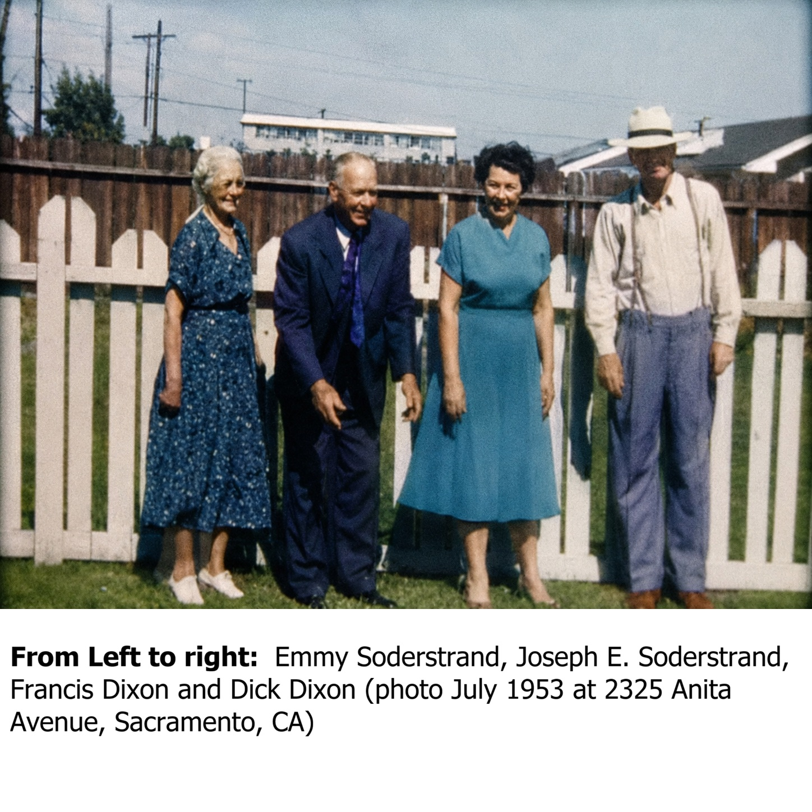
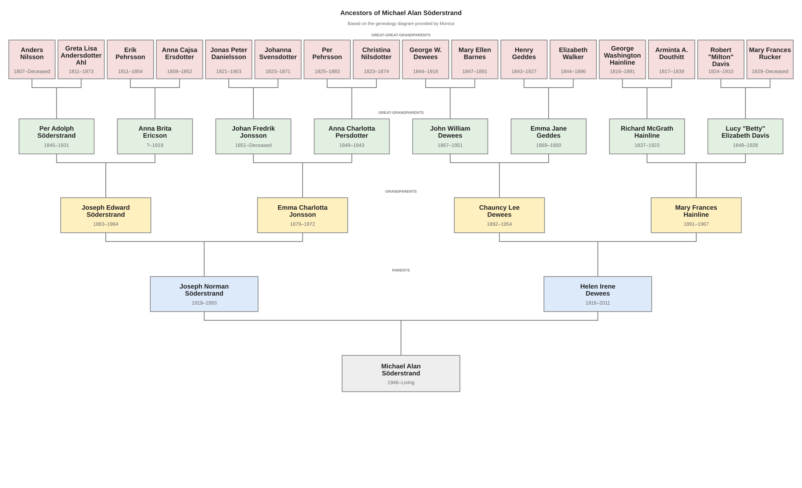
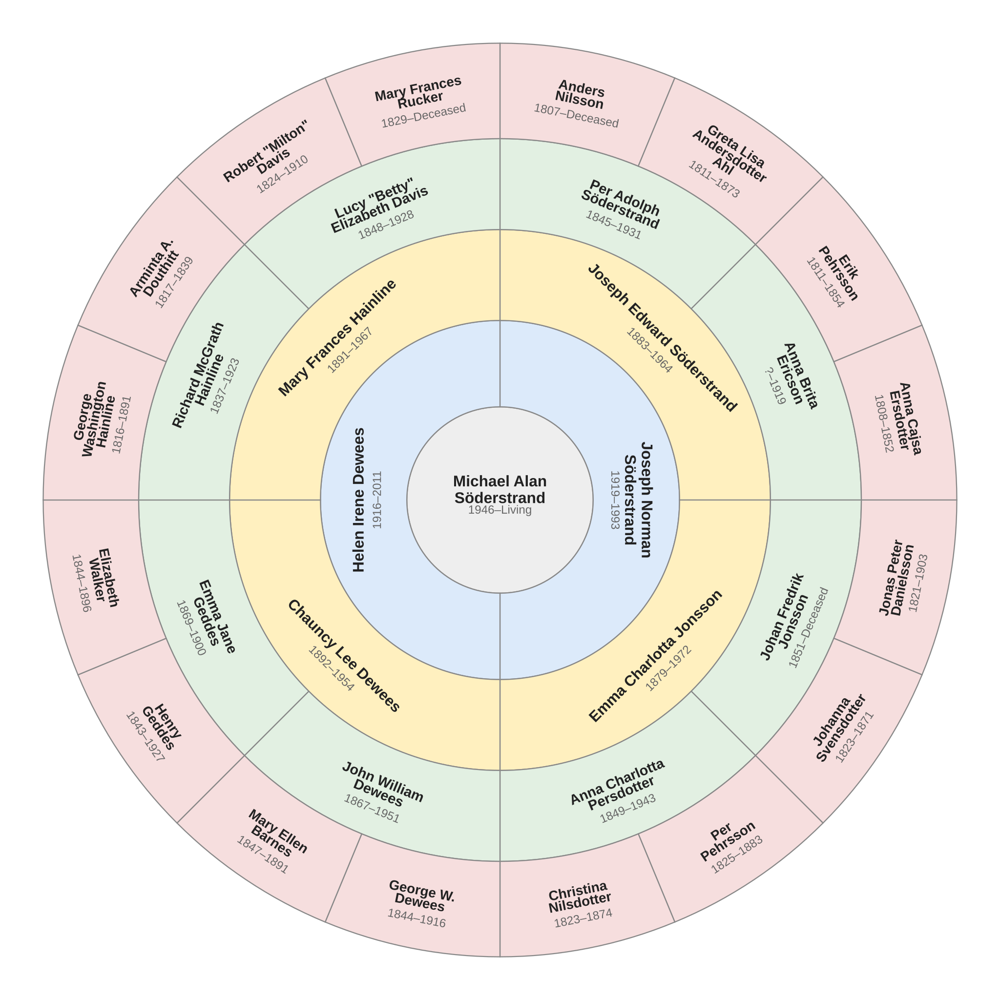

My Family Tree
I never had the honor of knowing personally my great-grandparents or my great-great-grandparents. I know them only through the family history that has been passed down to me. But I was very close to my four grandparents—or at least I thought they were my four grandparents.
The photograph below shows the four grandparents I knew: Grandma Emmy (Emma Charlotta Jonsson), Grandpa Joe (Joseph Edward Söderstrand), Grandma Frances (Mary Frances Hainline), and Grandpa Dick (Richard Dixon). Richard Dixon does not appear on the family tree because he was not my biological grandfather. I was never told that as a child. He was, however, the only grandfather I knew on my mother's side, and I loved him as my grandfather.

I never met Chauncy Lee Dewees, my biological grandfather on my mother's side. He died when I was only eight years old. My only memory connected with his death is of my mother staring out the front window. I could tell that something was wrong, so I asked her if she was OK. She simply said, "My dad died."
As an eight-year-old, that confused me. I thought Grandpa Dick Dixon was her dad. I never asked about it, and it was not until much later that I realized that I had never known my biological grandfather on my mother's side.
The two family trees below show the ancestry that I know from our family history. The first presents it in a traditional rectangular format; the second presents the same ancestry as a circular family tree.
My Family Tree — Traditional View

My Family Tree — Circular View
